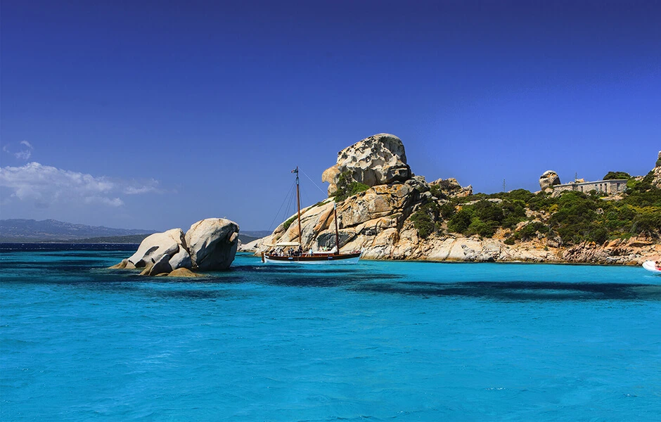

Una natura solitaria e selvaggia accoglie chi si avvicina all’isola di Budelli, famosa per la singolare Spiaggia Rosa. Cala di Roto, così era chiamata anticamente, è un gioiello di raro splendore che spicca e colpisce per la particolarità della sua sabbia, colorata di rosa dai gusci di piccoli animali marini. Resa famosa negli anni ’60 dal film Deserto Rosso di Antonioni, è il simbolo dell’incontaminata bellezza del Parco Nazionale dell’Arcipelago di La Maddalena. Un’area protetta e inaccessibile per tutelare questo patrimonio naturale.
Sull’isola di Budelli, di fronte allo specchio di mare racchiuso tra Santa Maria e Razzoli, si trova anche la spiaggia del Cavaliere notoriamente conosciuta come Manto della Madonna. Un velo candido e immacolato, dalle delicate sfumature e infinite trasparenze turchesi tocca la riva e il granito delle rocce. Un’oasi frequentatissima nei mesi estivi, ma perfetta per un tuffo settembrino.
Nella parte sudorientale dell’isola di Spargi troverete panorami che difficilmente potrete scordare. Imperdibile la visita a Cala Soraya, spiaggia che deve il suo nome alla regina Soraya, che tanto la amò. Con la caratteristica forma di mezzaluna, era originariamente chiamata dai maddalenini Cala Ciaccaro, circondata da splendidi ginepri fenici, elicriso e gigli marittimi.